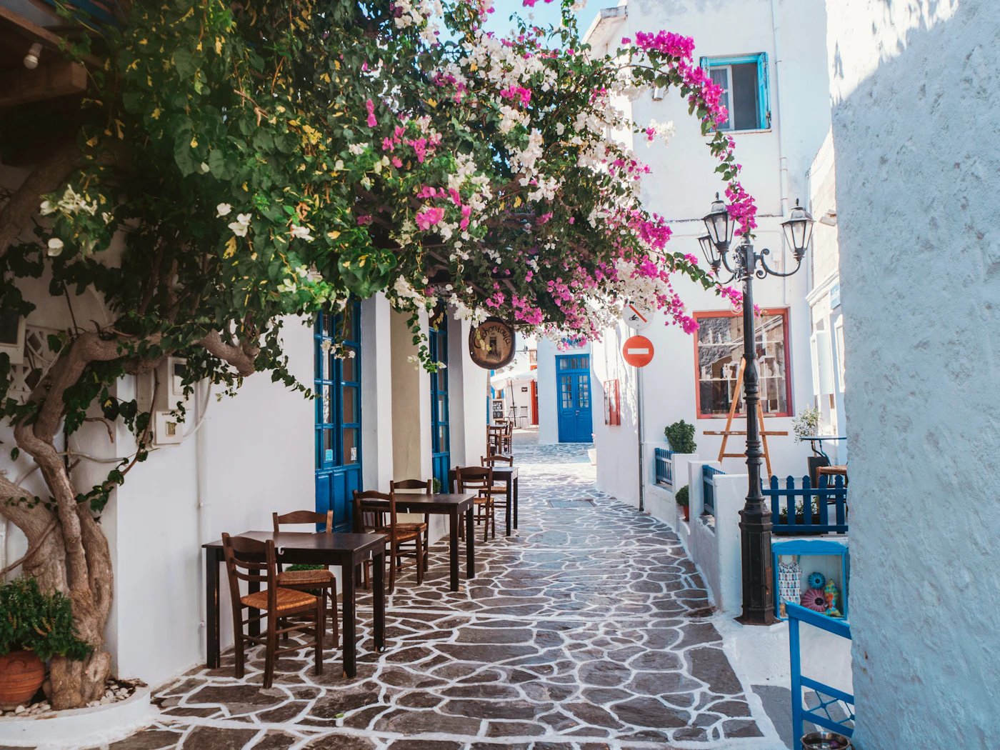
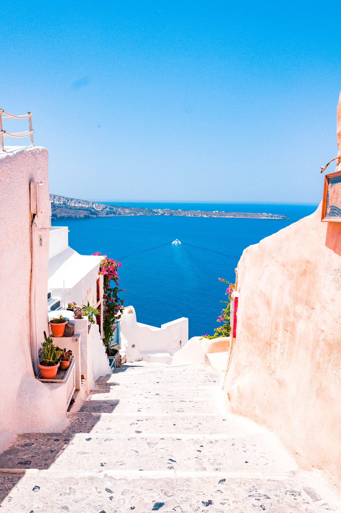

Vodiči / Solun
Solun — kad ići, aerodrom, Halkidiki, šta obavezno vidi

Kad ići u Solun — grad ili kombinacija sa Halkidikijem
Proleće i jesen su najprijatniji za obilazak grada — manje vrućine, manje turista nego u Atini. Leti (jul–avgust) grad zna da bude zagušljiv, ali blizina Halkidikija (oko 1–1,5h vožnje) čini Solun praktičnom bazom za kombinaciju grad + plaža — jutro u gradu, popodne na moru. Zima je blaga, dobra za kratak gradski izlet bez plaže.
Aerodrom Soluna i put do centra grada
Aerodrom Makedonija (SKG) je oko 16 km od centra. Do grada stižeš gradskim autobusom (linija 78/78N, jeftina opcija, radi i noću), taksijem (fiksna cena za grad, brže i praktičnije sa prtljagom) ili rent-a-car preuzimanjem odmah na aerodromu ako planiraš i izlet do Halkidikija. Solun je i vrlo popularna destinacija za Srbe koji putuju autom ili autobusom preko auto-puta E-75 — put iz Beograda traje oko 5–6 sati.
Koliko košta putovanje u Solun — orijentacione cene
- Bela kula (Beli kula) — ulaznica oko 8€, simbol grada i muzej istorije Soluna unutra.
- Muzej vizantijske kulture — oko 8€, jedan od najboljih muzeja te vrste u Grčkoj.
- Obrok u tavernama — 10–15€ po osobi, generalno jeftinije nego u Atini za sličan kvalitet.
- Auto ili organizovan transfer do Halkidikija (Kasandra) — oko 1–1,5h vožnje, dobra opcija za dan izleta na plažu.
Šta obavezno vidi u Solunu za 2–3 dana
- Bela kula — simbol grada uz samo more, popni se na vrh za pogled na Solunski zaliv.
- Šetalište Nikis — glavna promenada uz more, dobro mesto za veče i kafu.
- Rotonda (Crkva Sv. Georgija) — rimski spomenik pretvoren u crkvu, jedan od simbola grada.
- Gornji grad (Ano Poli) — deo sa vizantijskim zidinama i uskim uličicama, najbolji pogled na ceo grad odatle.
- Aristotelov trg — centralni trg za šetnju i kafiće, polazna tačka za istraživanje centra.

Gde jesti u Solunu — lokalna hrana koju treba probati
Solun važi za grad hrane u Grčkoj, uz nešto niže cene nego u Atini za isti kvalitet. Obavezno probaj: bugatsu (slatko ili slano pecivo za doručak, solunski specijalitet), giros sa uličnih tezgi, i večeru uz tsipouro i meze u kvartu Ladadika, koji je pun malih taverni i barova. Pijaca Modiano je dobro mesto za osećaj lokalne svakodnevice i sveže sastojke.
Skrivene lokacije u Solunu van glavnih ruta
- Kvart Ladadika — nekada skladišna zona, danas najživlji deo za večernji izlazak, manje poznat turistima na brzom prolazu kroz grad.
- Tvrđava Eptapyrgion (Jedikule) — na samom vrhu Gornjeg grada, panorama na ceo Solunski zaliv bez gužve.
- Pijaca Modiano — obnovljena stara pijaca sa lokalnim proizvodima i malim tavernama unutra.
- Perea — mirno primorsko mestašce blizu grada, dobar predah od gradske vreve ako imaš auto.
Praktični saveti pre rezervacije
- Dokumenta — Grčka je u Šengenu; proveri uslove ulaska za svoje državljanstvo pre puta.
- Kombinacija sa Halkidikijem — ako planiraš i more, rent-a-car ili organizovan transfer isplativiji su za grupu nego pojedinačni taksiji.
- Sezonske cene — smeštaj u julu/avgustu poskupljuje, dok su proleće i jesen povoljniji i manje zagušeni turistima.
Isplaniraj put do Soluna na SKLOPI →